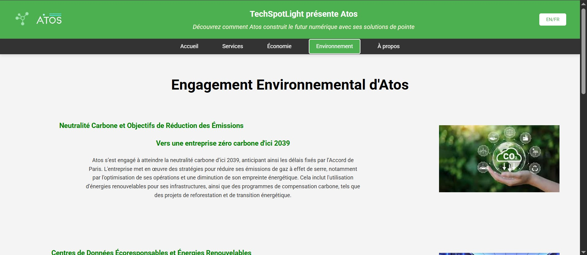
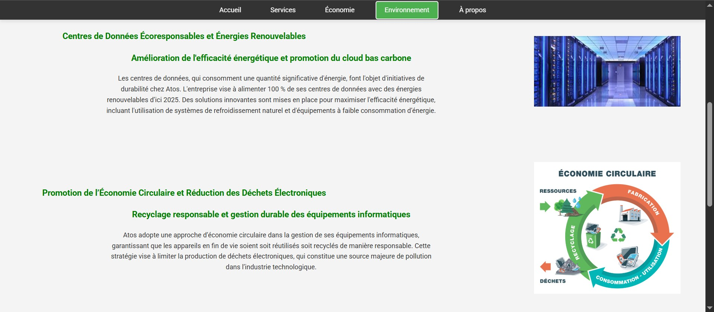

C'est un site web de présentation de l'entreprise Atos, j'étais chargé de faire la partie Environnement de l'entreprise avec leurs actions menée pour réduire leur trace énergétique et Carbonne.
Savoirs mobilisés :
- Connaissance des langages HTML et CSS pour la structure et le style
- Principes de design web et d'ergonomie utilisateur
- Techniques de responsive design pour l'adaptation multi-écrans
- Méthodes de travail en équipe et gestion de projet collaboratif
Savoir-faire acquis :
- Maîtrise de la structuration HTML sémantique
- Application des styles CSS avancés (flexbox, grid, animations)
- Optimisation de l'interface pour différents types d'écrans
- Collaboration efficace avec Git et GitHub
Points à améliorer :
- Améliorer mes compétences en JavaScript pour ajouter plus d'interactivité
- Développer une meilleure maîtrise des frameworks CSS modernes
- Renforcer la gestion de versions avec Git (branches, merge, etc.)

